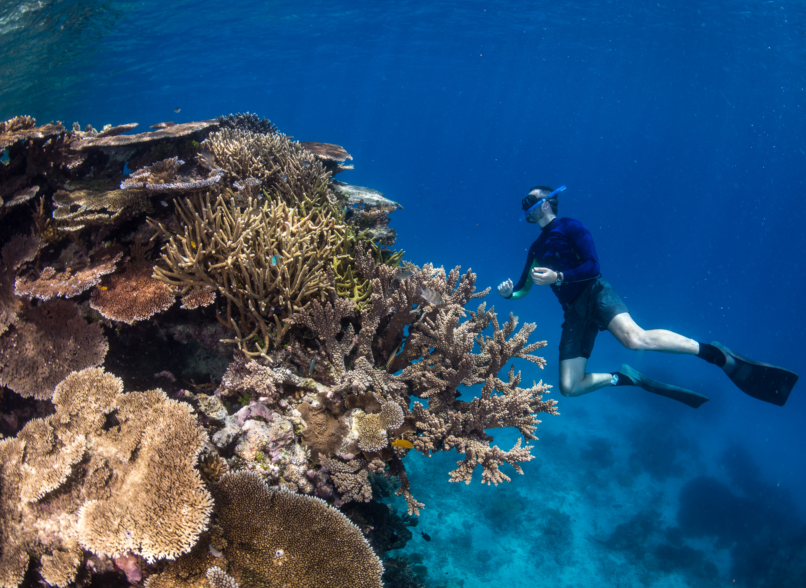

Dr. Peter Cowman
Principal Scientist of Marine Biodiversity, Queensland Museum Tropics
Associate Professor, James Cook University
Principal Scientist of Marine Biodiversity, Queensland Museum Tropics
Associate Professor, James Cook University
I am a marine biologist and bioinformatician bridging the gap between large-scale molecular phylogenetics and institutional museum curation. My work focuses on the evolutionary history of coral reef ecosystems, utilizing advanced computational pipelines to understand biodiversity.

Leading large-scale phylogenomic analyses to map the evolutionary trajectories of coral species. This project serves as a foundational dataset for understanding reef resilience and deep-time biodiversity.

Investigating the hidden and uncatalogued biodiversity within marine ecosystems. Leveraging advanced bioinformatics and museum collections to quantify what is missing from current ecological models.

Translating complex genomic data into public knowledge. Actively directing the curation, transition, and digitization of vital taxonomic collections at the Queensland Museum Tropics.